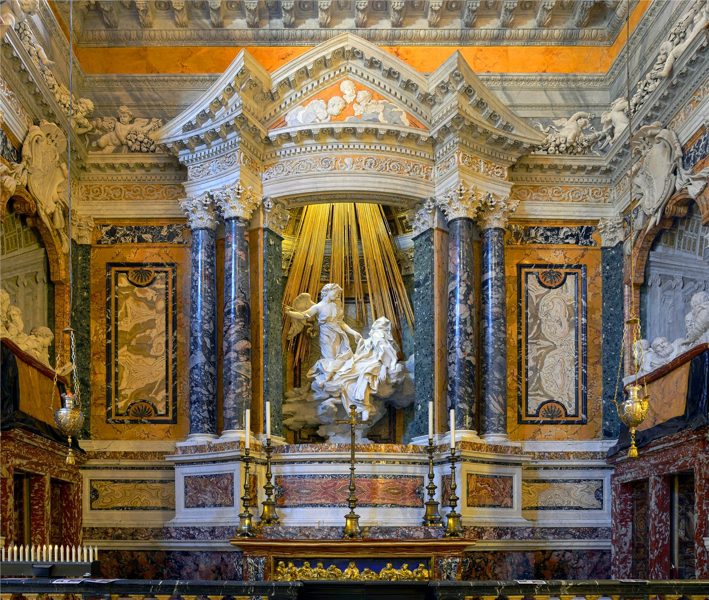

Teresa of Ávila spent much of her life trying to put one experience into words. A small angel, its face bright as if "wholly on fire," held a long golden spear tipped with a point of fire and drove it into her heart, again and again — pain sharp enough to make her moan, and yet the instant it withdrew, she wished for nothing but for it to happen again. A hundred years later, Bernini built that nearly untranslatable religious experience into an entire glowing marble theater — a shaft of gilded light falling as if from heaven, its source hidden where no one standing below could ever see it.
This isn't a statue on a pedestal — it's an entire chapel built as a stage set. At the center, paired dark marble columns carry a broken pediment that opens onto a deep shadowed niche, and inside it, the figures of Teresa and the angel float in mid-air on a heap of carved cloud, with no visible support holding them up at all.
Easier to miss are the side walls: Bernini carved two rows of theater "boxes" into them, with relief portraits of eight members of the Cornaro family — the cardinal who commissioned the chapel among them — leaning on balustrades as if watching a performance, some gesturing, some in quiet conversation. The device folds the act of watching into the artwork itself: anyone who walks in today is, in effect, sharing a box with a family that's been sitting there for over 350 years.
Look up and there's a third layer — stucco angels and a ceiling fresco painting the sky splitting open around a descending dove. Architecture, sculpture, painting and light are fused into what Bernini called the bel composto, the "beautiful whole" — nothing here can be lifted out and read on its own.
The chapel really only runs on three tiers of color. The figures themselves are carved from near-white Carrara marble — cool, luminous, and the only place your eye is meant to rest. Around them, the architectural frame is dark verde antico marble columns and a deep wine-toned marble base — heavy, restrained, like a hushed stage curtain. And tucked inside the niche wall, a small patch of warm ochre-veined marble quietly bridges the cool stone to the gold that's coming.
The real climax color is the shaft of gilt bronze rays — a small fraction of the composition by area, but the single most reflective surface in the room, so it reads first no matter where you stand. It's the same principle behind a lot of luxurious-looking color schemes: cover most of the space in low-saturation cool or neutral tone, and save the one high-saturation, high-reflectance accent for exactly the thing you want seen.
The light itself is the closest thing to a magic trick in the whole chapel. Bernini cut a window above the pediment that's invisible from the floor, fitted it with amber glass, and let real Roman daylight strike a row of gilt bronze rods hanging down from the shadows behind the sculpture. What reads as a miracle is, mechanically, a hidden stage light — and because it's real sunlight, its intensity actually shifts through the day. Nothing here is a trick of representation; the light source has simply been deleted from view.
The carving does its own version of the same trick. The angel's gauzy robe is cut so deep and so thin it looks like it could tear; Teresa's heavy habit is carved in huge rolling folds, with a running drill boring nearly black shadow-holes into the deepest creases to make cloth look softer than stone has any right to. Polished skin catches light, roughened fabric absorbs it — and that contrast, more than anything else, is what makes two figures resting on a cloud look effortless rather than obviously propped up.
The photograph itself is doing similar work: shot as an HDR composite by Livioandronico2013, it holds the painted vault, the blown-out gold highlights, and the shadowed texture of the green marble columns all in one frame — a single exposure would either burn the rays to white or lose the dark stone entirely.
In chapter 29 of her autobiography, Teresa describes the angel's spear in specific, almost clinical detail: golden, its tip "seeming to have a point of fire," driven into her heart so deep it felt as if it reached her very entrails, drawing a moan when it was pulled back out. And then, immediately, the reversal — the pain was "so sweet that one could not wish it to cease," and her soul "could be content with nothing less than God." That fusion of pain and rapture into a single, indivisible sensation is exactly what Bernini carved: her head thrown back, lips parted, toes curling — an expression sitting so precisely between agony and bliss that no single word covers it.
That ambiguity has unsettled viewers since at least the 18th century. The French writer Charles de Brosses, passing through Rome, is said to have remarked, half in jest, that if this was divine love, he knew it quite well. The joke has survived for nearly three centuries for a reason: Bernini wasn't carving a safe devotional image. Baroque theology held that love of God should be felt through the whole body, not contemplated at arm's length — and putting something the secular eye reads as ecstasy onto the same face as sanctity is, in a real sense, the work's most honest and riskiest choice.
The Cornaro family portraits in the side boxes quietly turn that intensely private mystical vision into public theater — the patrons carved permanently into the audience, watching a performance people still travel to Rome specifically to see.
Gian Lorenzo Bernini (1598–1680) was born in Naples and spent his adult life in Rome, where he became the defining figure of Roman High Baroque art — sculptor, architect and stage designer in one, responsible for landmarks including the colonnade of St. Peter's Square and the Fountain of the Four Rivers. The Cornaro Chapel was commissioned by the Venetian Cardinal Federico Cornaro and built between 1647 and 1652, intended in part as a future burial site for the Cornaro family.
The subject, Teresa of Ávila (1515–1582), was a Spanish Carmelite nun and mystic, co-founder of the Discalced Carmelites, canonized in 1622, and in 1970 named one of the first women ever declared a Doctor of the Church. Both Bernini and Teresa have been dead for centuries; the sculpture is in the public domain. This photograph was taken inside Santa Maria della Vittoria by photographer Livioandronico2013, published on Wikimedia Commons in 2015 under CC BY-SA 4.0 — the photograph's rights belong to the photographer.